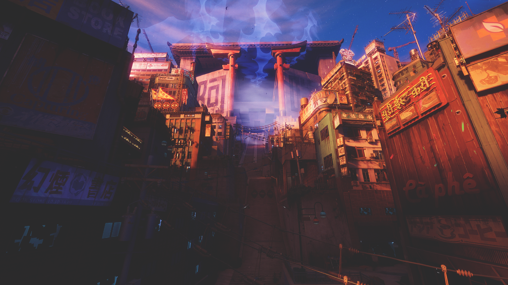

Kemuri

As a Yokai Hunter, use the Fox Window to reveal what others cannot see, form contracts with the yokai you encounter, and wear their power as Possession Apparel.
- Introduced an Engagement Zones System, which are custom-defined areas around the player, each owned by 1 NPC (dynamically assigned), where NPCs move to and attack from during combat, with different zone types (ground-melee; flying range; etc…). This addition was extremely well received since it drastically improved combat readability.
- Introduced an Attack Ticket System, where NPCs would request ticket(s) to attack and the system would either grant them or place the NPCs in a queue. Contains a Scored Waiting Queue to control which NPCs should attack more frequently, as well as Queue Skip and Ticket Stealing functionality when detecting that an NPC should attack immediately (for opportunistic attacks).
- Created new Combat Abilities using the GAS framework in UE5, and iterated on the data-driven combat ability selection logic.
- Improved Combat Feel - Introduced a cheap solution to make NPCs move around the player instead of coming at a straight angle (funneling) by using a high cost dynamic navigation obstacle around the player. Improved NPC’s position selection during combat by considering the distance to walls, prioritizing positions in open spaces for smoother gameplay. Improved position selection for flying NPCs, making their navigation more reliable. Decreased frequency of NPCs moving around too much during combat (ping-pong between positions), by only making them move when their current position is no longer suitable (instead of always going to their best position at any given time, which might oscillate). Introduced magnetization towards breakable-items when an NPC is knocked-back (and breaking said items in the process), making the environment more reactive. Added wall-bounce when enemies are knocked-back into a wall.
- Worked with Behavior Trees to drive NPC’s behaviors. Introduced Dynamic Behavior Tree Injection to avoid tree duplication.
- Automatic generation of markups during Navmesh post-processing.
- Created debug visualization tools for combat-related systems, including the Attack Ticket System, the Engagement Zones, Ability Selection, and NPC State, which helped designers iterate on the data setup, as well as QA during bug reporting.
- Extended the Environment Query System with new generators (e.g. positions inside the NPC’s assigned Engagement Zone) and tests (e.g. distance from navmesh edges). Improved maintainability by creating commonly used data bindings (e.g. NPC’s radius), as well as a Dynamic Post Projection Offset for use with flying NPCs.